Home
Scatter Plot
Bubble Chart
Table
Created by: Andrew King | Paul Wang | Denise Okur | Dante Company
NEAR COLLISIONS IN SPACE
Data collected using NASA's SBDB (small-body database) Close-Approach Data API
SCATTER PLOT
=
{{ props.item.name }}
{{ props.item.calories }}
{{ props.item.fat }}
{{ props.item.carbs }}
{{ props.item.protein }}
{{ props.item.iron }}
Top